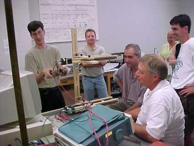
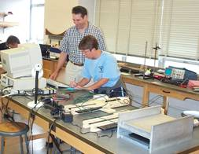
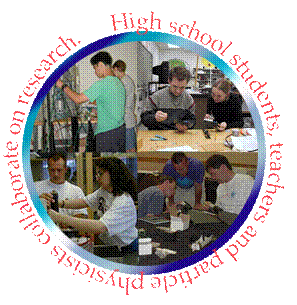

|
What is PARTICLE?
Program Goals
Program Components
High School Curricula
Get Involved!
Sponsors
Site Map |
Program Goals
The
PARTICLE (Physicists And Rochester Teachers Inventing CLassroom
Experiments) Program, which has been implemented in Rochester
area high school classrooms since 1999, is designed to fulfill
two main goals:
- To promote open-ended, inquiry-based experiments and student
engagement in original research.
- To increase student and teacher knowledge of modern physics,
especially elementary particle physics.
|
Program Components
The PARTICLE Program has essentially three parts to it:
- Summer Institute –
This is a three week course during the summer at the University
of Rochester for both new and returning teachers.
- New teachers will build the cosmic ray detectors they
will use in their classrooms and perform experiments
with their detectors. Plenty of time is dedicated to
working the laboratory so that new teachers will become
comfortable with the entire experimental process that
their students will go through: thinking of a question,
designing an experiment to answer their question, collecting
the necessary data, analyzing their data, and evaluating
their results. New teachers will also attend lectures
on topics in particle physics, such as the standard
model, so they can bring that knowledge back to their
classroom. There are opportunities for the new teachers
to discuss pedagogy and talk about how to integrate
the detectors into their classrooms. Returning teachers
often participate in these discussions.
- The Summer Institute is also a time for returning
teachers to "come back" to the U of R. Returning
teachers are encouraged either to work on developing
resources for their classrooms or to bring their students
to campus for a few weeks and do more extensive research
with them.
- Classroom Outreach
– Cosmic ray detectors are available for use in the
classroom during the school year. Teachers have integrated
the detectors into their classrooms in different ways. For
example, some teachers have used the detectors as part of
an in-class lab during their modern physics unit while other
teachers have encouraged their students to design and conduct
a long-term research project outside of class. Throughout
the school year, U of R physicists make themselves available
as a resource for teachers. U of R physicists visit classrooms
to give lectures on requested topics, to bring modern physics
demonstrations, to assist students with their projects,
and to provide technical support.
- PARTICLE Day - This is
a one-day poster conference at the end of the school year
where students have the opportunity to share their research
with their peers. In addition to learning what projects
other students have been working on, students are taken
on a tour of the physics labs at the University of Rochester.
|
High School Curricula
The PARTICLE Program addresses the following components of
the New York State curriculum:
For a detailed evaluation of the PARTICLE program, including
how it coincides with the state curriculum, National Science
Education Standards, and the Authentic Inquiry Framework,
refer to Rachael
Anderman’s Masters Thesis.
|
Get Involved!
Prospective
Teachers
Prospective Students |
Sponsors
Our
many thanks to the support provided by:
|
| |
|
|
Department of Physics and Astronomy, University of Rochester, PO Box
270171, Rochester, NY 14627-0170, (585)-275-5306 |
|